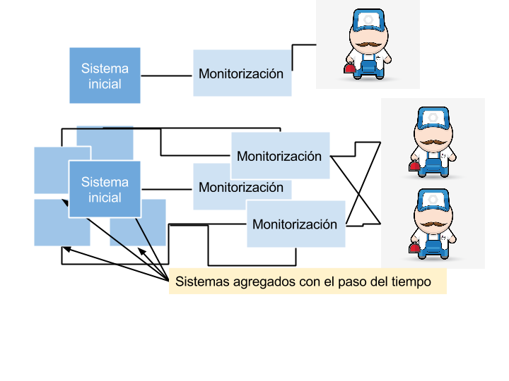

Escuela
Politécnica
de Cuenca
Trabajo de Fin de Grado
Módulo de Monitorización de Sistemas de Información con Servidores Inmutables
Zaída de Isidro Navarro
Antecedentes

Parte teórica
SELF-HEALING
It's a presentation tool
inspired by the idea behind prezi.com
and based on the power of CSS3 transforms and transitions in modern browsers.
visualize your big thoughts
and tiny ideas
by positioning, rotating and scaling them on an infinite canvas
the only limit is your imagination
want to know more?
use the source, Luke!
one more thing...
have you noticed it's in 3D*?
* beat that, prezi ;)